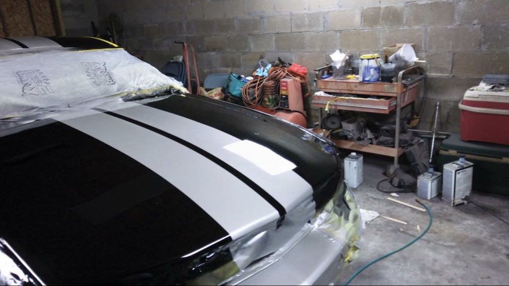
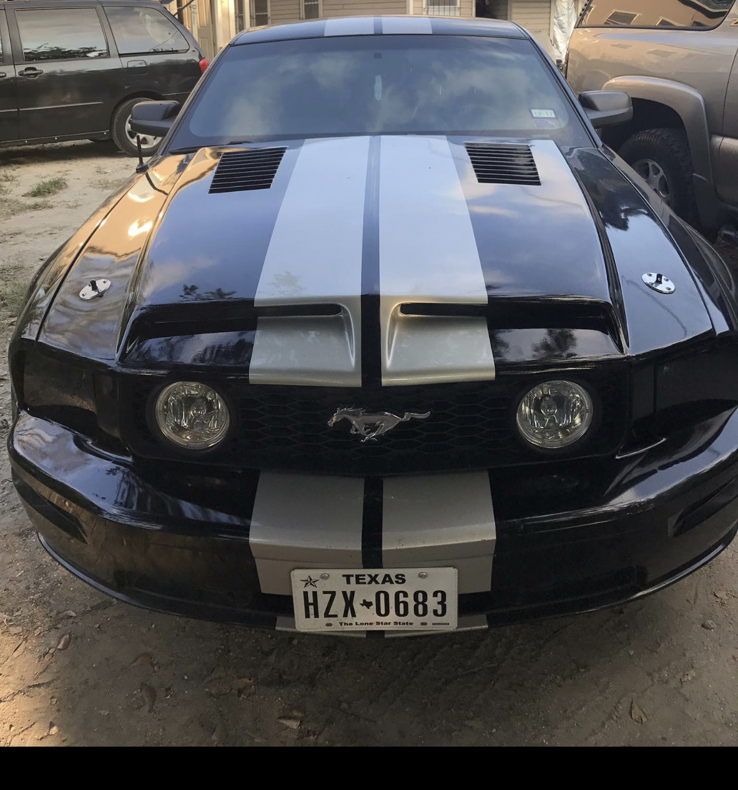
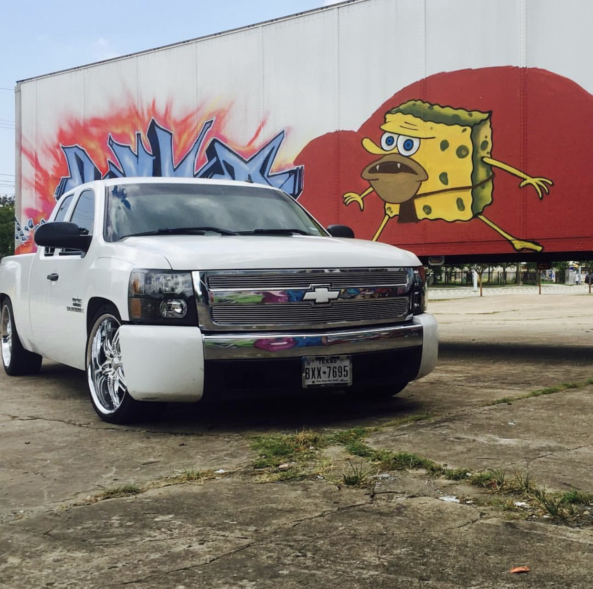
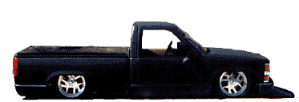

Before

During

After
One of my main and most expensive hobby is car rebuilding, it started when i got a truck in 2013 and had a lot fo free time in my hands. My current project at the moment is my 2007 Ford mustang GT, I purchased this car wrecked and have been slowly builiding on it. A couple of the mods on the mustang would be:
- Roush Cold air intake
- fiberglass GT500 Hood
- Borla Exhaust
- Performance Coils / Alternator
- 2014 Mustang Gt center console swap
- Raxiom NNBS style Headlights
- and the list goes on ..

Here is my Silverado  this was the first project i worked on which went more for aesthetics rather then reliability. My truck was dropped which meant the suspension was basically non existent so driving it in Houston felt like it was a wood wagon.
A couple of the mods on the Silverado:- Dropped 4',6'
- Airflow exhaust system
- CAT Deletes
- Tuned by KHP
- 22' Viscera wheels
- and the list also goes on